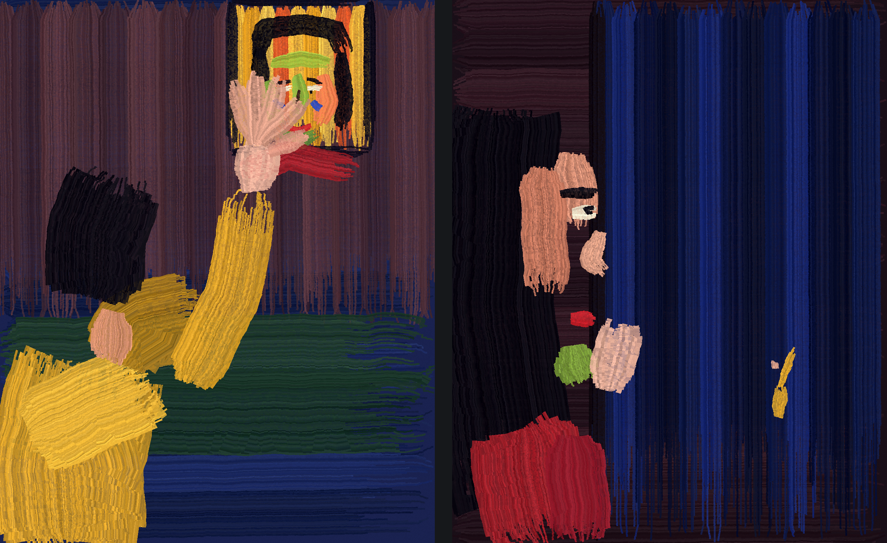

A man waves up at a lit window and his hand covers the woman in it; from her side he is a speck.
Two panels, 2026. Painted in code with a bristle brush I built (the strokes run out of paint along the arm). No photograph, no image model.